EDA on Sentiment Data
Contents
EDA on Sentiment Data#
Analyse statement by Loughran and McDonald dictionary
%config InlineBackend.figure_format='retina'
from ekorpkit import eKonf
eKonf.setLogger("WARNING")
print("version:", eKonf.__version__)
print("is notebook?", eKonf.is_notebook())
print("is colab?", eKonf.is_colab())
print("evironment varialbles:")
eKonf.print(eKonf.env().dict())
INFO:ekorpkit.base:IPython version: (6, 9, 0), client: jupyter_client
INFO:ekorpkit.base:Google Colab not detected.
version: 0.1.35+0.g69734d6.dirty
is notebook? True
is colab? False
evironment varialbles:
{'CUDA_DEVICE_ORDER': None,
'CUDA_VISIBLE_DEVICES': None,
'EKORPKIT_CONFIG_DIR': '/workspace/projects/ekorpkit-book/config',
'EKORPKIT_DATA_DIR': None,
'EKORPKIT_LOG_LEVEL': 'WARNING',
'EKORPKIT_PROJECT': 'ekorpkit-book',
'EKORPKIT_WORKSPACE_ROOT': '/workspace',
'KMP_DUPLICATE_LIB_OK': 'TRUE',
'NUM_WORKERS': 230}
start_year = 1999
data_dir = "../data/fomc"
eKonf.env().FRED_API_KEY
pydantic.types.SecretStr
Load datasets#
tone_data_lm = eKonf.load_data('fomc_tone_data_lm.parquet', data_dir)
tone_data_lm
| polarity_mean_beigebook | polarity_mean_meeting_script | polarity_mean_minutes | polarity_mean_press_conf | polarity_mean_speech | polarity_mean_statement | polarity_mean_testimony | polarity_diffusion_beigebook | polarity_diffusion_meeting_script | polarity_diffusion_minutes | ... | num_tokens_sum_speech | num_tokens_sum_statement | num_tokens_sum_testimony | num_tokens_mean_beigebook | num_tokens_mean_meeting_script | num_tokens_mean_minutes | num_tokens_mean_press_conf | num_tokens_mean_speech | num_tokens_mean_statement | num_tokens_mean_testimony | |
|---|---|---|---|---|---|---|---|---|---|---|---|---|---|---|---|---|---|---|---|---|---|
| date | |||||||||||||||||||||
| 1990-02-07 | NaN | -0.087583 | NaN | NaN | NaN | NaN | NaN | NaN | -0.095663 | NaN | ... | NaN | NaN | NaN | NaN | 30.213010 | NaN | NaN | NaN | NaN | NaN |
| 1990-03-27 | NaN | -0.171992 | NaN | NaN | NaN | NaN | NaN | NaN | -0.179702 | NaN | ... | NaN | NaN | NaN | NaN | 29.846369 | NaN | NaN | NaN | NaN | NaN |
| 1990-05-15 | NaN | -0.116052 | NaN | NaN | NaN | NaN | NaN | NaN | -0.125461 | NaN | ... | NaN | NaN | NaN | NaN | 29.749077 | NaN | NaN | NaN | NaN | NaN |
| 1990-07-03 | NaN | -0.114829 | NaN | NaN | NaN | NaN | NaN | NaN | -0.117794 | NaN | ... | NaN | NaN | NaN | NaN | 29.667920 | NaN | NaN | NaN | NaN | NaN |
| 1990-08-21 | NaN | -0.209552 | NaN | NaN | NaN | NaN | NaN | NaN | -0.219403 | NaN | ... | NaN | NaN | NaN | NaN | 31.032836 | NaN | NaN | NaN | NaN | NaN |
| ... | ... | ... | ... | ... | ... | ... | ... | ... | ... | ... | ... | ... | ... | ... | ... | ... | ... | ... | ... | ... | ... |
| 2021-11-30 | NaN | NaN | NaN | NaN | -0.167014 | NaN | -0.12 | NaN | NaN | NaN | ... | 3066.0 | NaN | 556.0 | NaN | NaN | NaN | NaN | 31.937500 | NaN | 27.8 |
| 2021-12-01 | -0.046022 | NaN | NaN | NaN | NaN | NaN | NaN | -0.048109 | NaN | NaN | ... | NaN | NaN | NaN | 22.539497 | NaN | NaN | NaN | NaN | NaN | NaN |
| 2021-12-02 | NaN | NaN | NaN | NaN | -0.077381 | NaN | NaN | NaN | NaN | NaN | ... | 6514.0 | NaN | NaN | NaN | NaN | NaN | NaN | 36.188889 | NaN | NaN |
| 2021-12-15 | NaN | NaN | -0.043929 | -0.075441 | NaN | 0.166667 | NaN | NaN | NaN | -0.064286 | ... | NaN | 489.0 | NaN | NaN | NaN | 30.521429 | 37.587413 | NaN | 27.166667 | NaN |
| 2021-12-17 | NaN | NaN | NaN | NaN | -0.356613 | NaN | NaN | NaN | NaN | NaN | ... | 3694.0 | NaN | NaN | NaN | NaN | NaN | NaN | 29.317460 | NaN | NaN |
1876 rows × 35 columns
tone_data_finbert = eKonf.load_data('fomc_tone_data_finbert.parquet', data_dir)
cols = [
'polarity_mean_minutes', 'polarity_mean_press_conf', 'polarity_mean_speech', 'polarity_mean_statement',
'polarity_diffusion_minutes', 'polarity_diffusion_press_conf', 'polarity_diffusion_speech', 'polarity_diffusion_statement',
]
tone_data_finbert = tone_data_finbert[cols].copy()
tone_data_finbert.columns = tone_data_finbert.columns.str.replace('polarity', 'finbert')
tone_data_finbert
| finbert_mean_minutes | finbert_mean_press_conf | finbert_mean_speech | finbert_mean_statement | finbert_diffusion_minutes | finbert_diffusion_press_conf | finbert_diffusion_speech | finbert_diffusion_statement | |
|---|---|---|---|---|---|---|---|---|
| date | ||||||||
| 1990-02-07 | NaN | NaN | NaN | NaN | NaN | NaN | NaN | NaN |
| 1990-03-27 | NaN | NaN | NaN | NaN | NaN | NaN | NaN | NaN |
| 1990-05-15 | NaN | NaN | NaN | NaN | NaN | NaN | NaN | NaN |
| 1990-07-03 | NaN | NaN | NaN | NaN | NaN | NaN | NaN | NaN |
| 1990-08-21 | NaN | NaN | NaN | NaN | NaN | NaN | NaN | NaN |
| ... | ... | ... | ... | ... | ... | ... | ... | ... |
| 2021-11-30 | NaN | NaN | 0.182338 | NaN | NaN | NaN | 0.239583 | NaN |
| 2021-12-01 | NaN | NaN | NaN | NaN | NaN | NaN | NaN | NaN |
| 2021-12-02 | NaN | NaN | 0.262141 | NaN | NaN | NaN | 0.338889 | NaN |
| 2021-12-15 | 0.509806 | 0.280516 | NaN | 0.412947 | 0.675 | 0.377622 | NaN | 0.555556 |
| 2021-12-17 | NaN | NaN | 0.408242 | NaN | NaN | NaN | 0.547619 | NaN |
1876 rows × 8 columns
tone_data_t5 = eKonf.load_data('fomc_tone_data_t5.parquet', data_dir)
cols = [
'polarity_diffusion_minutes', 'polarity_diffusion_press_conf', 'polarity_diffusion_speech', 'polarity_diffusion_statement',
]
tone_data_t5 = tone_data_t5[cols].copy()
tone_data_t5.columns = tone_data_t5.columns.str.replace('polarity', 't5')
tone_data_t5
| t5_diffusion_minutes | t5_diffusion_press_conf | t5_diffusion_speech | t5_diffusion_statement | |
|---|---|---|---|---|
| date | ||||
| 1990-02-07 | NaN | NaN | NaN | NaN |
| 1990-03-27 | NaN | NaN | NaN | NaN |
| 1990-05-15 | NaN | NaN | NaN | NaN |
| 1990-07-03 | NaN | NaN | NaN | NaN |
| 1990-08-21 | NaN | NaN | NaN | NaN |
| ... | ... | ... | ... | ... |
| 2021-11-30 | NaN | NaN | 0.239583 | NaN |
| 2021-12-01 | NaN | NaN | NaN | NaN |
| 2021-12-02 | NaN | NaN | 0.250000 | NaN |
| 2021-12-15 | 0.403571 | 0.216783 | NaN | 0.444444 |
| 2021-12-17 | NaN | NaN | 0.174603 | NaN |
1876 rows × 4 columns
Correlation#
cfg = eKonf.compose("io/fetcher/fomc")
cfg.output_dir = data_dir
fomc = eKonf.instantiate(cfg)
INFO:ekorpkit.base:IPython version: (6, 9, 0), client: jupyter_client
fomc.load_calendar(from_year=1982, force_download=False)
| unscheduled | forecast | confcall | speaker | rate | rate_change | rate_decision | rate_changed | |
|---|---|---|---|---|---|---|---|---|
| date | ||||||||
| 1982-10-05 | False | False | False | Paul Volcker | 9.50 | -0.50 | -1.0 | 1 |
| 1982-11-16 | False | False | False | Paul Volcker | 9.00 | -0.50 | -1.0 | 1 |
| 1982-12-21 | False | False | False | Paul Volcker | 8.50 | 0.00 | 0.0 | 0 |
| 1983-01-14 | False | False | True | Paul Volcker | 8.50 | 0.00 | 0.0 | 0 |
| 1983-01-21 | False | False | True | Paul Volcker | 8.50 | 0.00 | 0.0 | 0 |
| ... | ... | ... | ... | ... | ... | ... | ... | ... |
| 2021-11-03 | False | False | False | Jerome Powell | 0.25 | 0.00 | 0.0 | 0 |
| 2021-12-15 | False | True | False | Jerome Powell | 0.25 | 0.00 | 0.0 | 0 |
| 2022-01-26 | False | False | False | Jerome Powell | 0.25 | 0.00 | 0.0 | 0 |
| 2022-03-16 | False | True | False | Jerome Powell | 0.50 | 0.25 | 1.0 | 1 |
| 2022-05-04 | False | False | False | Jerome Powell | 1.00 | 0.50 | 1.0 | 1 |
415 rows × 8 columns
Merge with fed rate data#
cfg = eKonf.compose('visualize/plot=lineplot')
cfg.plot.y = 'rate'
cfg.ax.title = 'Fed Rate'
eKonf.instantiate(cfg, data=fomc.calendar)
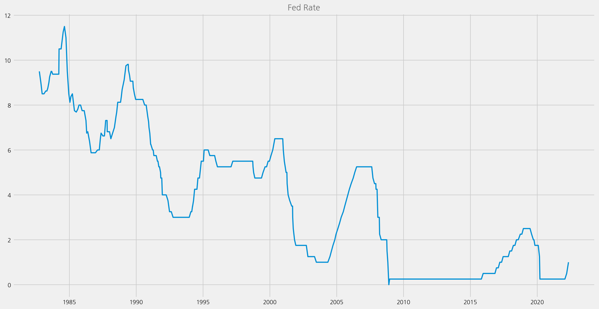
tone_data = tone_data_lm.merge(tone_data_finbert, left_index=True, right_index=True)
tone_data = tone_data.merge(tone_data_t5, left_index=True, right_index=True)
tone_data.index.name = 'date'
tone_data = tone_data[tone_data.index.year >= (start_year-1)]
tone_data
| polarity_mean_beigebook | polarity_mean_meeting_script | polarity_mean_minutes | polarity_mean_press_conf | polarity_mean_speech | polarity_mean_statement | polarity_mean_testimony | polarity_diffusion_beigebook | polarity_diffusion_meeting_script | polarity_diffusion_minutes | ... | finbert_mean_speech | finbert_mean_statement | finbert_diffusion_minutes | finbert_diffusion_press_conf | finbert_diffusion_speech | finbert_diffusion_statement | t5_diffusion_minutes | t5_diffusion_press_conf | t5_diffusion_speech | t5_diffusion_statement | |
|---|---|---|---|---|---|---|---|---|---|---|---|---|---|---|---|---|---|---|---|---|---|
| date | |||||||||||||||||||||
| 1998-01-03 | NaN | NaN | NaN | NaN | -0.018248 | NaN | NaN | NaN | NaN | NaN | ... | 0.264435 | NaN | NaN | NaN | 0.357664 | NaN | NaN | NaN | 0.094891 | NaN |
| 1998-01-08 | NaN | NaN | NaN | NaN | -0.379629 | NaN | NaN | NaN | NaN | NaN | ... | 0.503096 | NaN | NaN | NaN | 0.672840 | NaN | NaN | NaN | 0.277778 | NaN |
| 1998-01-12 | NaN | NaN | NaN | NaN | -0.030516 | NaN | NaN | NaN | NaN | NaN | ... | 0.293520 | NaN | NaN | NaN | 0.380282 | NaN | NaN | NaN | 0.260563 | NaN |
| 1998-01-16 | NaN | NaN | NaN | NaN | -0.029630 | NaN | NaN | NaN | NaN | NaN | ... | 0.408889 | NaN | NaN | NaN | 0.518519 | NaN | NaN | NaN | 0.382716 | NaN |
| 1998-01-29 | NaN | NaN | NaN | NaN | NaN | NaN | -0.376811 | NaN | NaN | NaN | ... | NaN | NaN | NaN | NaN | NaN | NaN | NaN | NaN | NaN | NaN |
| ... | ... | ... | ... | ... | ... | ... | ... | ... | ... | ... | ... | ... | ... | ... | ... | ... | ... | ... | ... | ... | ... |
| 2021-11-30 | NaN | NaN | NaN | NaN | -0.167014 | NaN | -0.120000 | NaN | NaN | NaN | ... | 0.182338 | NaN | NaN | NaN | 0.239583 | NaN | NaN | NaN | 0.239583 | NaN |
| 2021-12-01 | -0.046022 | NaN | NaN | NaN | NaN | NaN | NaN | -0.048109 | NaN | NaN | ... | NaN | NaN | NaN | NaN | NaN | NaN | NaN | NaN | NaN | NaN |
| 2021-12-02 | NaN | NaN | NaN | NaN | -0.077381 | NaN | NaN | NaN | NaN | NaN | ... | 0.262141 | NaN | NaN | NaN | 0.338889 | NaN | NaN | NaN | 0.250000 | NaN |
| 2021-12-15 | NaN | NaN | -0.043929 | -0.075441 | NaN | 0.166667 | NaN | NaN | NaN | -0.064286 | ... | NaN | 0.412947 | 0.675 | 0.377622 | NaN | 0.555556 | 0.403571 | 0.216783 | NaN | 0.444444 |
| 2021-12-17 | NaN | NaN | NaN | NaN | -0.356613 | NaN | NaN | NaN | NaN | NaN | ... | 0.408242 | NaN | NaN | NaN | 0.547619 | NaN | NaN | NaN | 0.174603 | NaN |
1722 rows × 47 columns
cols = [
'polarity_diffusion_minutes', 'polarity_diffusion_press_conf', 'polarity_diffusion_speech', 'polarity_diffusion_statement',
'finbert_diffusion_minutes', 'finbert_diffusion_press_conf', 'finbert_diffusion_speech', 'finbert_diffusion_statement',
't5_diffusion_minutes', 't5_diffusion_press_conf', 't5_diffusion_speech', 't5_diffusion_statement'
]
merged_tone_data = fomc.calendar.copy()
for name in cols:
offset = dict(months=0, days=1)
data = tone_data.dropna(subset=[name])
merged_tone_data = fomc.add_available_latest(
merged_tone_data, data, name, [name], offset
)
merged_tone_data = merged_tone_data[(merged_tone_data.index.year >= (start_year-1)) & (merged_tone_data.index.year < 2022)]
eKonf.save_data(merged_tone_data, "fomc_tone_data_merged.parquet", data_dir)
merged_tone_data
| unscheduled | forecast | confcall | speaker | rate | rate_change | rate_decision | rate_changed | polarity_diffusion_minutes | polarity_diffusion_minutes_date | ... | finbert_diffusion_statement | finbert_diffusion_statement_date | t5_diffusion_minutes | t5_diffusion_minutes_date | t5_diffusion_press_conf | t5_diffusion_press_conf_date | t5_diffusion_speech | t5_diffusion_speech_date | t5_diffusion_statement | t5_diffusion_statement_date | |
|---|---|---|---|---|---|---|---|---|---|---|---|---|---|---|---|---|---|---|---|---|---|
| date | |||||||||||||||||||||
| 1998-02-04 | False | False | False | Alan Greenspan | 5.50 | 0.0 | 0.0 | 0 | NaN | NaT | ... | NaN | NaT | NaN | NaT | NaN | NaT | 0.382716 | 1998-01-16 | NaN | NaT |
| 1998-03-31 | False | False | False | Alan Greenspan | 5.50 | 0.0 | 0.0 | 0 | -0.103139 | 1998-02-04 | ... | NaN | NaT | 0.367713 | 1998-02-04 | NaN | NaT | 0.160305 | 1998-03-26 | NaN | NaT |
| 1998-05-19 | False | False | False | Alan Greenspan | 5.50 | 0.0 | 0.0 | 0 | -0.069767 | 1998-03-31 | ... | NaN | NaT | 0.519380 | 1998-03-31 | NaN | NaT | 0.279070 | 1998-05-12 | NaN | NaT |
| 1998-07-01 | False | False | False | Alan Greenspan | 5.50 | 0.0 | 0.0 | 0 | -0.233129 | 1998-05-19 | ... | NaN | NaT | 0.429448 | 1998-05-19 | NaN | NaT | 0.297297 | 1998-06-18 | NaN | NaT |
| 1998-08-18 | False | False | False | Alan Greenspan | 5.50 | 0.0 | 0.0 | 0 | -0.155172 | 1998-07-01 | ... | NaN | NaT | 0.419540 | 1998-07-01 | NaN | NaT | 0.136364 | 1998-07-20 | NaN | NaT |
| ... | ... | ... | ... | ... | ... | ... | ... | ... | ... | ... | ... | ... | ... | ... | ... | ... | ... | ... | ... | ... | ... |
| 2021-06-16 | False | True | False | Jerome Powell | 0.25 | 0.0 | 0.0 | 0 | -0.040741 | 2021-04-28 | ... | 0.615385 | 2021-04-28 | 0.407407 | 2021-04-28 | 0.142012 | 2021-04-28 | 0.330709 | 2021-06-03 | 0.384615 | 2021-04-28 |
| 2021-07-28 | False | False | False | Jerome Powell | 0.25 | 0.0 | 0.0 | 0 | 0.031142 | 2021-06-16 | ... | 0.461538 | 2021-06-16 | 0.456747 | 2021-06-16 | 0.194737 | 2021-06-16 | 0.228070 | 2021-07-11 | 0.615385 | 2021-06-16 |
| 2021-09-22 | False | True | False | Jerome Powell | 0.25 | 0.0 | 0.0 | 0 | -0.069079 | 2021-07-28 | ... | 0.538462 | 2021-07-28 | 0.414474 | 2021-07-28 | 0.197674 | 2021-07-28 | 0.148148 | 2021-09-09 | 0.538462 | 2021-07-28 |
| 2021-11-03 | False | False | False | Jerome Powell | 0.25 | 0.0 | 0.0 | 0 | -0.112403 | 2021-09-22 | ... | 0.571429 | 2021-09-22 | 0.395349 | 2021-09-22 | 0.143695 | 2021-09-22 | 0.085714 | 2021-10-22 | 0.571429 | 2021-09-22 |
| 2021-12-15 | False | True | False | Jerome Powell | 0.25 | 0.0 | 0.0 | 0 | -0.080851 | 2021-11-03 | ... | 0.647059 | 2021-11-03 | 0.476596 | 2021-11-03 | 0.172619 | 2021-11-03 | 0.250000 | 2021-12-02 | 0.705882 | 2021-11-03 |
229 rows × 32 columns
import numpy as np
tone_columns = {
'lm': ['polarity_diffusion_minutes', 'polarity_diffusion_speech', 'polarity_diffusion_statement'],
'finbert': ['finbert_diffusion_minutes', 'finbert_diffusion_speech', 'finbert_diffusion_statement'],
't5': ['t5_diffusion_minutes', 't5_diffusion_speech', 't5_diffusion_statement']
}
tone_cols = []
for name, cols in tone_columns.items():
tone_col = name + '_tones'
tone_cols.append(tone_col)
merged_tone_data[tone_col] = merged_tone_data[cols].mean(axis=1, skipna=True)
merged_tone_data = merged_tone_data.copy()[merged_tone_data.index.year >= start_year]
eKonf.save_data(merged_tone_data, "fomc_tone_data_merged.parquet", data_dir)
merged_tone_data
| unscheduled | forecast | confcall | speaker | rate | rate_change | rate_decision | rate_changed | polarity_diffusion_minutes | polarity_diffusion_minutes_date | ... | t5_diffusion_minutes_date | t5_diffusion_press_conf | t5_diffusion_press_conf_date | t5_diffusion_speech | t5_diffusion_speech_date | t5_diffusion_statement | t5_diffusion_statement_date | lm_tones | finbert_tones | t5_tones | |
|---|---|---|---|---|---|---|---|---|---|---|---|---|---|---|---|---|---|---|---|---|---|
| date | |||||||||||||||||||||
| 1999-02-03 | False | False | False | Alan Greenspan | 4.75 | 0.00 | 0.0 | 0 | -0.096552 | 1998-12-22 | ... | 1998-12-22 | NaN | NaT | 0.111111 | 1999-01-21 | 0.136364 | 1998-11-17 | -0.243343 | 0.506885 | 0.222721 |
| 1999-03-30 | False | False | False | Alan Greenspan | 4.75 | 0.00 | 0.0 | 0 | -0.072464 | 1999-02-03 | ... | 1999-02-03 | NaN | NaT | 0.187050 | 1999-03-25 | 0.136364 | 1998-11-17 | -0.241290 | 0.529236 | 0.243070 |
| 1999-05-18 | False | False | False | Alan Greenspan | 4.75 | 0.00 | 0.0 | 0 | -0.050360 | 1999-03-30 | ... | 1999-03-30 | NaN | NaT | 0.245509 | 1999-05-13 | 0.136364 | 1998-11-17 | -0.112051 | 0.579674 | 0.285564 |
| 1999-06-30 | False | False | False | Alan Greenspan | 5.00 | 0.25 | 1.0 | 1 | -0.028169 | 1999-05-18 | ... | 1999-05-18 | NaN | NaT | 0.097561 | 1999-06-22 | 0.625000 | 1999-05-18 | -0.050040 | 0.621722 | 0.412215 |
| 1999-08-24 | False | False | False | Alan Greenspan | 5.25 | 0.25 | 1.0 | 1 | -0.059524 | 1999-06-30 | ... | 1999-06-30 | NaN | NaT | 0.178947 | 1999-07-29 | 0.269231 | 1999-06-30 | -0.135226 | 0.548355 | 0.343837 |
| ... | ... | ... | ... | ... | ... | ... | ... | ... | ... | ... | ... | ... | ... | ... | ... | ... | ... | ... | ... | ... | ... |
| 2021-06-16 | False | True | False | Jerome Powell | 0.25 | 0.00 | 0.0 | 0 | -0.040741 | 2021-04-28 | ... | 2021-04-28 | 0.142012 | 2021-04-28 | 0.330709 | 2021-06-03 | 0.384615 | 2021-04-28 | 0.086359 | 0.582206 | 0.374244 |
| 2021-07-28 | False | False | False | Jerome Powell | 0.25 | 0.00 | 0.0 | 0 | 0.031142 | 2021-06-16 | ... | 2021-06-16 | 0.194737 | 2021-06-16 | 0.228070 | 2021-07-11 | 0.615385 | 2021-06-16 | 0.167826 | 0.419857 | 0.433401 |
| 2021-09-22 | False | True | False | Jerome Powell | 0.25 | 0.00 | 0.0 | 0 | -0.069079 | 2021-07-28 | ... | 2021-07-28 | 0.197674 | 2021-07-28 | 0.148148 | 2021-09-09 | 0.538462 | 2021-07-28 | 0.176087 | 0.441048 | 0.367028 |
| 2021-11-03 | False | False | False | Jerome Powell | 0.25 | 0.00 | 0.0 | 0 | -0.112403 | 2021-09-22 | ... | 2021-09-22 | 0.143695 | 2021-09-22 | 0.085714 | 2021-10-22 | 0.571429 | 2021-09-22 | -0.037468 | 0.531340 | 0.350831 |
| 2021-12-15 | False | True | False | Jerome Powell | 0.25 | 0.00 | 0.0 | 0 | -0.080851 | 2021-11-03 | ... | 2021-11-03 | 0.172619 | 2021-11-03 | 0.250000 | 2021-12-02 | 0.705882 | 2021-11-03 | -0.001460 | 0.564110 | 0.477493 |
219 rows × 35 columns
corr_columns = sum(tone_columns.values(), []) + ["rate", "rate_change"]
corr_data = merged_tone_data[corr_columns].astype(float).corr()
cfg = eKonf.compose("visualize/plot=heatmap")
cfg.figure.figsize = (12, 8)
cfg.heatmap.cmap = "YlGnBu"
cfg.heatmap.vmin = 0
cfg.heatmap.vmax = 1
cfg.heatmap.fmt = ".2f"
cfg.ax.title = "Correlation"
eKonf.instantiate(cfg, data=corr_data)
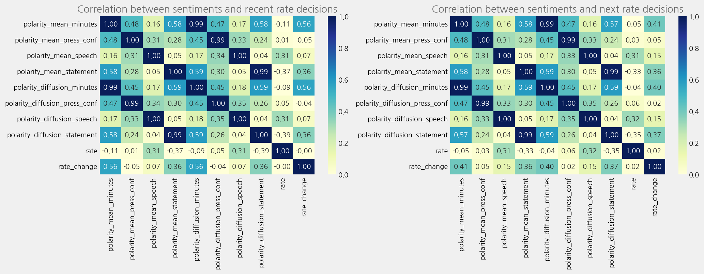
corr_columns = tone_cols + ["rate", "rate_change"]
corr_data = merged_tone_data[corr_columns].astype(float).corr()
cfg = eKonf.compose("visualize/plot=heatmap")
cfg.figure.figsize = (8, 6)
cfg.heatmap.cmap = "YlGnBu"
cfg.heatmap.vmin = 0
cfg.heatmap.vmax = 1
cfg.heatmap.fmt = ".2f"
cfg.ax.title = "Correlation"
eKonf.instantiate(cfg, data=corr_data)
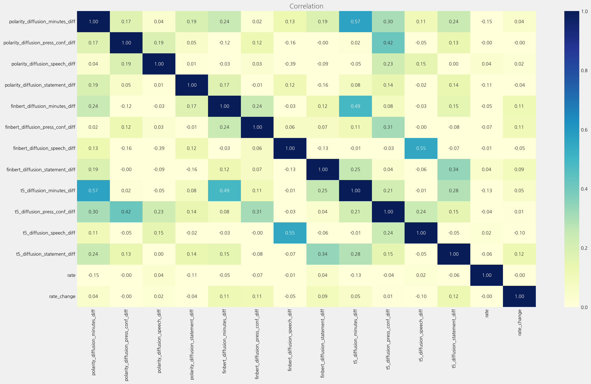
Plot the sentiment scores#
cfg = eKonf.compose('visualize/plot=lineplot')
cfg.plot.y = ['polarity_mean_minutes', 'polarity_mean_press_conf', 'polarity_mean_speech', 'polarity_mean_statement']
cfg.ax.title = 'The polarity scores of the FOMC corpus'
eKonf.instantiate(cfg, data=tone_data_lm)
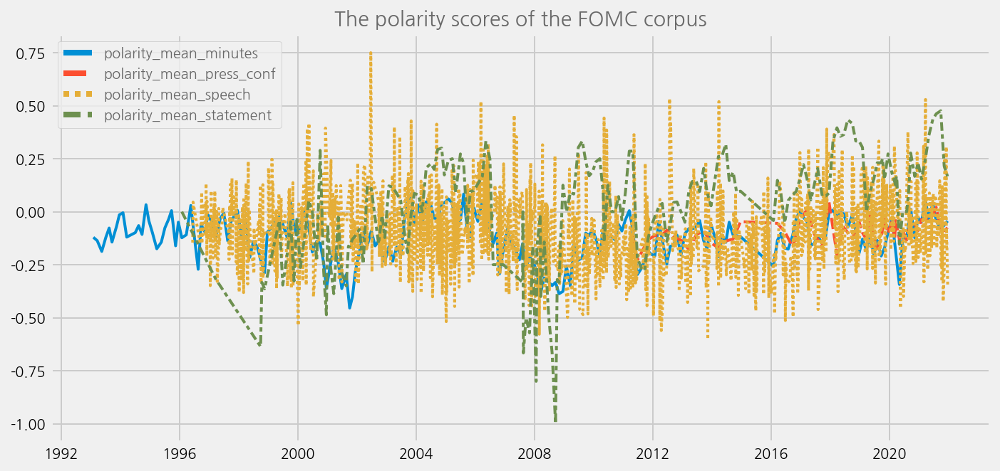
cfg = eKonf.compose('visualize/plot=lineplot')
cfg.plot.y = ['polarity_diffusion_minutes', 'polarity_diffusion_press_conf', 'polarity_diffusion_speech', 'polarity_diffusion_statement']
cfg.ax.title = 'The polarity scores of the FOMC corpus'
eKonf.instantiate(cfg, data=tone_data_lm)
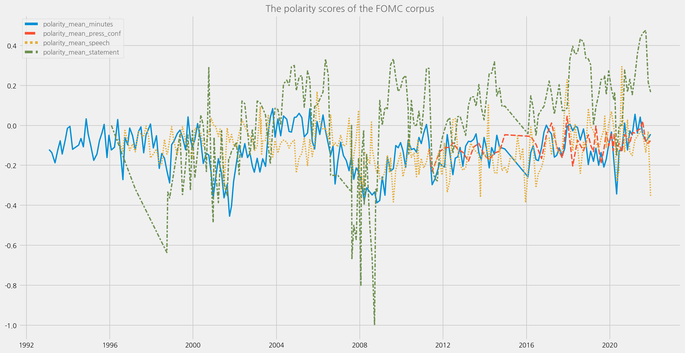
cfg = eKonf.compose('visualize/plot=lineplot')
cfg.plot.y = ['polarity_mean_statement', 'polarity_diffusion_statement']
cfg.ax.title = 'The polarity scores of the FOMC statements'
eKonf.instantiate(cfg, data=tone_data_lm)
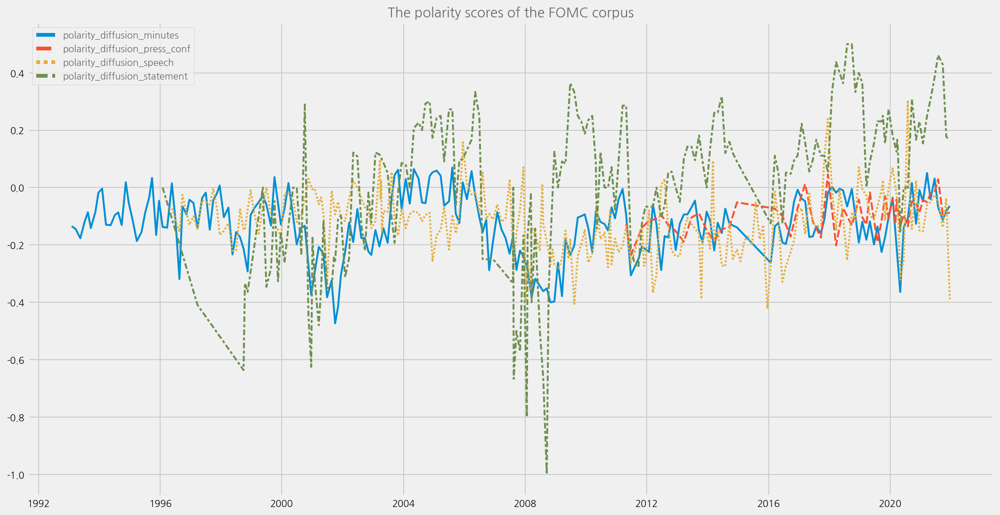
cfg = eKonf.compose('visualize/plot=lineplot')
cfg.plots.append(cfg.plot.copy())
cfg.plots[0].y = "num_tokens_sum_statement"
cfg.plots[0].rcParams = dict(linewidth=2.5, color="red")
cfg.plots[1].y = "num_examples_statement"
cfg.plots[1].rcParams = dict(linewidth=1.5, color="green")
cfg.plots[1].secondary_y = True
cfg.ax.legend = dict(
labels=[
"The number of tokens in the FOMC statements (LHS)",
],
loc=2,
)
ax2 = cfg.ax.copy()
ax2.grid = False
ax2.secondary_y = True
ax2.legend = dict(
labels=["The number of sentences in the FOMC statements (RHS)"],
loc=1,
)
cfg.axes.append(ax2)
eKonf.instantiate(cfg, data=tone_data_lm)
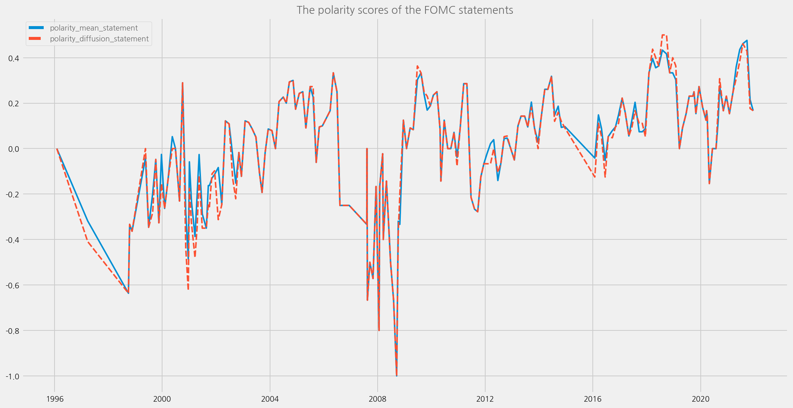
sentiments = ['polarity_diffusion_statement', 'finbert_diffusion_statement', 't5_diffusion_statement']
cfg = eKonf.compose('visualize/plot=lineplot')
cfg.plot.y = sentiments
cfg.ax.title = 'Comparing polarity scores of the FOMC corpus by models'
eKonf.instantiate(cfg, data=merged_tone_data)
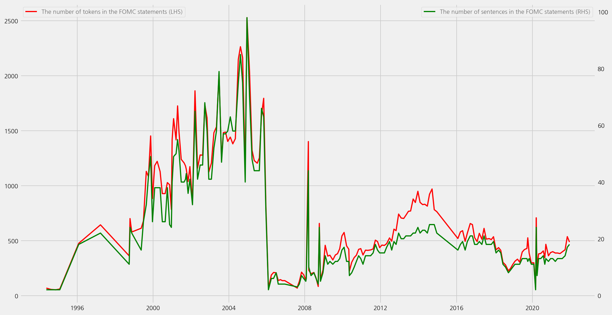
sentiments = ['polarity_diffusion_minutes', 'finbert_diffusion_minutes', 't5_diffusion_minutes']
cfg = eKonf.compose('visualize/plot=lineplot')
cfg.plot.y = sentiments
cfg.ax.title = 'Comparing polarity scores of the FOMC corpus by models'
eKonf.instantiate(cfg, data=merged_tone_data)
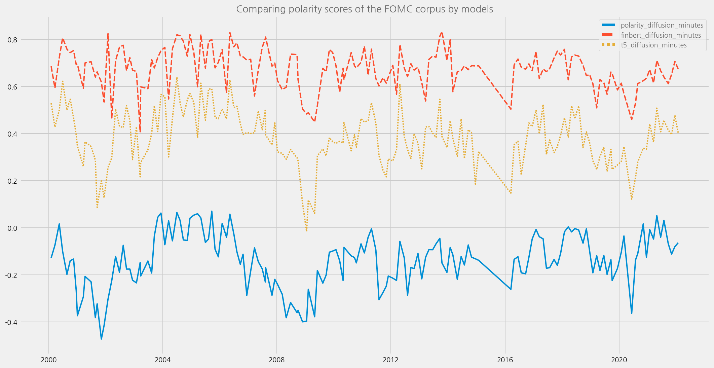
Plot the results and compare to the economical uncertainty / systemic risk periods#
def plot_sentiments_over_crisis_periods(name='polarity_diffusion_statement', window=2):
recessions = fomc.recessions.to_dict(orient="records")
span_args = eKonf.compose("visualize/plot/ax/axvspan")
annot_args = eKonf.compose("visualize/plot/ax/annotation")
span_args.color = "crimson"
span_args.alpha = 0.4
spans = []
annotations = []
for span in recessions:
annotation = span["name"]
start = span["from_date"]
end = span["to_date"]
span = span_args.copy()
span.xmin, span.xmax = eKonf.to_dateparm(start), eKonf.to_dateparm(end)
x = start + (end - start) / 2
y = -0.75
annot = annot_args.copy()
annot.text, annot.x, annot.y = annotation, eKonf.to_dateparm(x), y
spans.append(span)
annotations.append(annot)
merged_tone_data["polarity_ma"] = merged_tone_data[name].rolling(window).mean()
cfg = eKonf.compose("visualize/plot=lineplot")
cfg.plots.append(cfg.plot.copy())
cfg.plots[0].y = "polarity_ma"
cfg.plots[0].linewidth = 2.5
cfg.plots[0].palette = "r"
cfg.plots[1].y = name
cfg.plots[1].linewidth = 1.5
cfg.plots[1].palette = "g"
cfg.ax.title = f"Polarity scores of {name}"
cfg.ax.legend.labels = [
f"{window} period MA",
f"Polarity score of {name}",
]
cfg.ax.axvspans = spans
cfg.ax.annotations = annotations
eKonf.instantiate(cfg, data=merged_tone_data)
sentiments = ['polarity_diffusion_statement', 'finbert_diffusion_statement', 't5_diffusion_statement']
for name in sentiments:
plot_sentiments_over_crisis_periods(name)
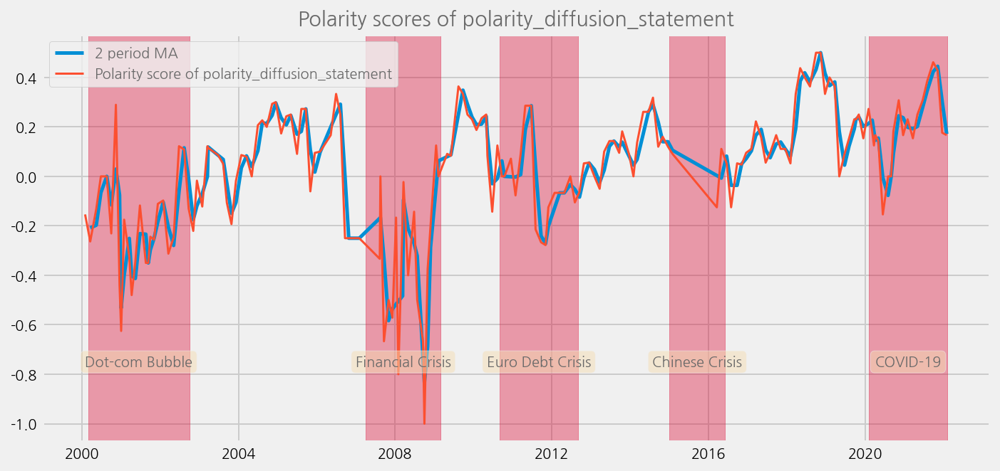
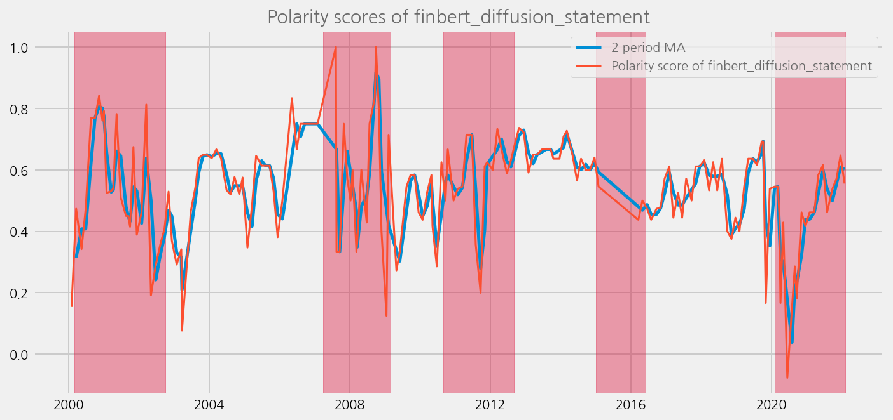
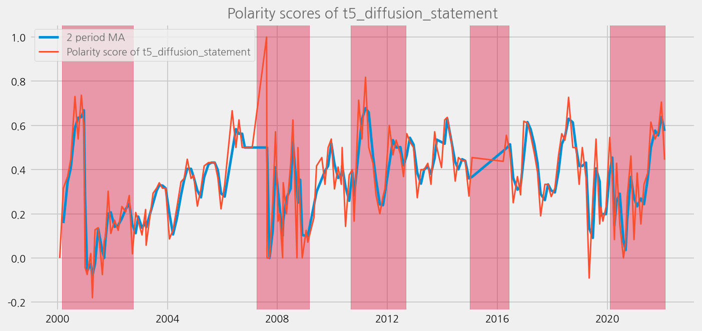
sentiments = ['polarity_diffusion_minutes', 'finbert_diffusion_minutes', 't5_diffusion_minutes']
for name in sentiments:
plot_sentiments_over_crisis_periods(name)
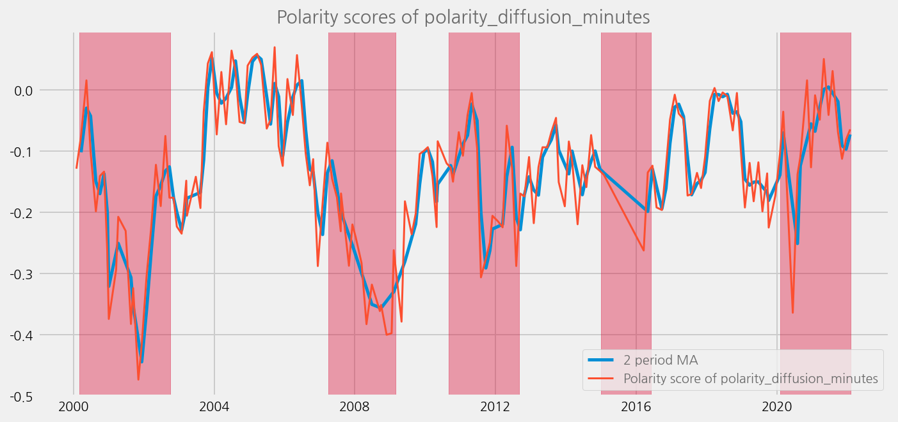
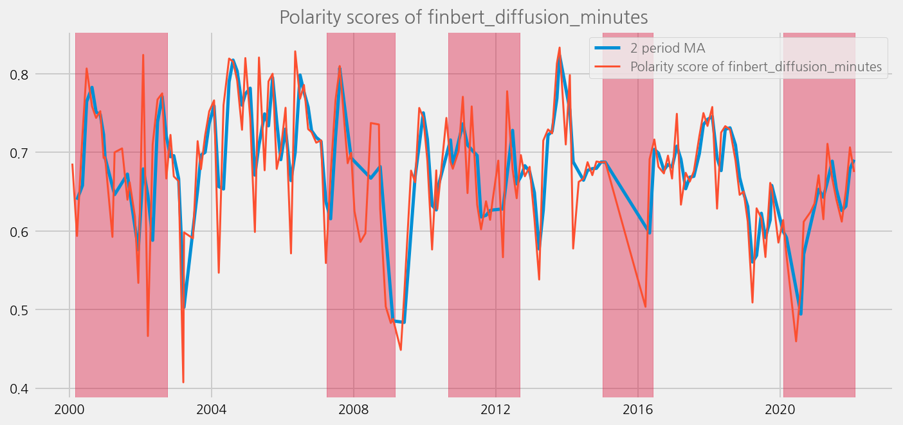
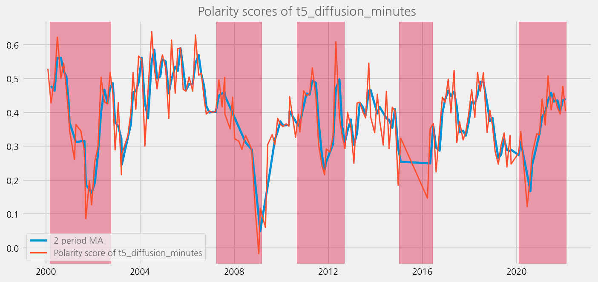
from datetime import datetime
chair = fomc.chairpersons
chair = chair[chair.to_date.dt.year >= start_year]
def plot_sentiments_over_chair_periods(name='polarity_diffusion_statement', window=3):
annot_args = eKonf.compose("visualize/plot/ax/annotation")
spans = []
annotations = []
for row in chair.iterrows():
row_num = row[0]
start = row[1]["from_date"]
if start.year < start_year:
start = datetime(2000, 1, 1)
end = row[1]["to_date"]
annotation = row[1]["last_name"]
color = "crimson" if row_num % 2 == 0 else "darkblue"
alpha = 0.4 if row_num % 2 == 0 else 0.2
span = {
"xmin": eKonf.to_dateparm(start),
"xmax": eKonf.to_dateparm(end),
"alpha": alpha,
"color": color,
}
x = start + (end - start) / 2
y = -0.75
annot = annot_args.copy()
annot.text, annot.x, annot.y = annotation, eKonf.to_dateparm(x), y
spans.append(span)
annotations.append(annot)
merged_tone_data["polarity_ma"] = merged_tone_data[name].rolling(window).mean()
cfg = eKonf.compose("visualize/plot=lineplot")
ax2 = cfg.ax.copy()
cfg.plots.append(cfg.plot.copy())
cfg.plots[0].y = "polarity_ma"
cfg.plots[0].rcParams = dict(linewidth=2.5, color="red")
cfg.plots[1].y = name
cfg.plots[1].rcParams = dict(linewidth=1.5, color="green")
cfg.ax.title = f"Polarity scores of {name}"
cfg.ax.legend = dict(
labels=[
f"{window} period MA",
f"Polarity score of {name}",
],
loc=2,
)
scatter_cfg = eKonf.compose("visualize/plot/scatterplot")
scatter_cfg.y = "rate"
scatter_cfg.secondary_y = True
scatter_cfg.rcParams = dict(color="blue", alpha=0.8)
cfg.plots.append(scatter_cfg)
ax2.grid = False
ax2.secondary_y = True
ax2.ylim = "(-4, 10)"
ax2.legend = dict(
labels=["Fed Rate"],
loc=1,
)
cfg.axes.append(ax2)
cfg.ax.axvspans = spans
cfg.ax.annotations = annotations
eKonf.instantiate(cfg, data=merged_tone_data)
sentiments = ['polarity_diffusion_statement', 'finbert_diffusion_statement', 't5_diffusion_statement']
for name in sentiments:
plot_sentiments_over_chair_periods(name)
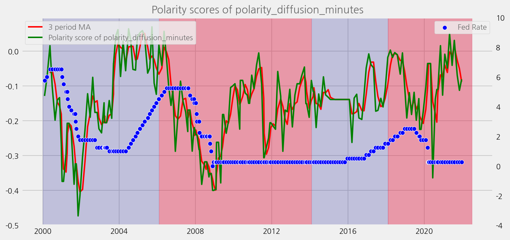
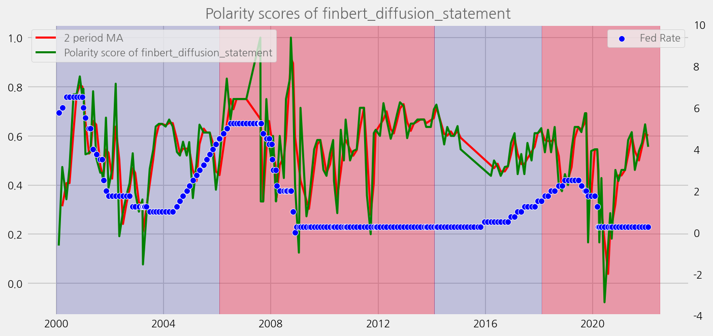
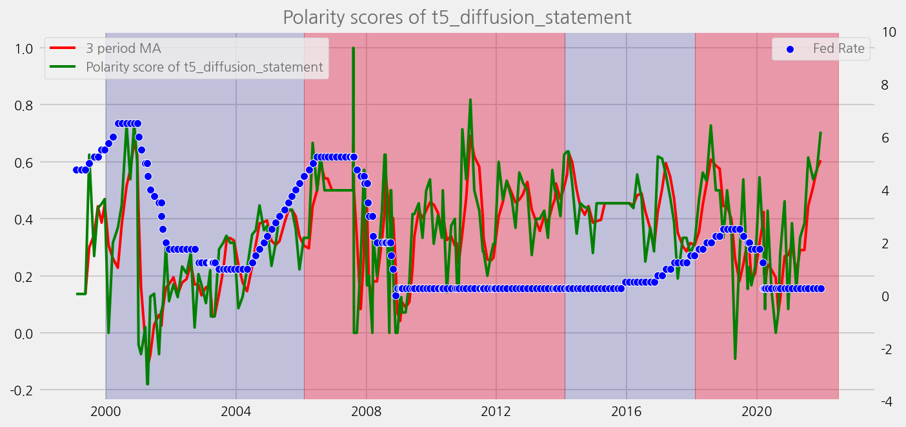
sentiments = ['polarity_diffusion_minutes', 'finbert_diffusion_minutes', 't5_diffusion_minutes']
for name in sentiments:
plot_sentiments_over_chair_periods(name)
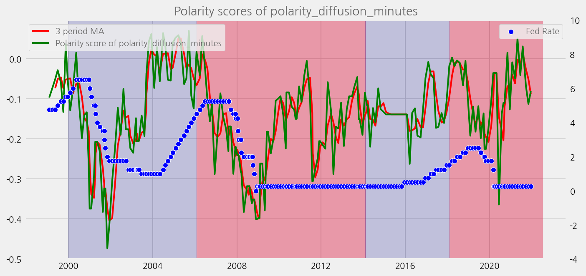
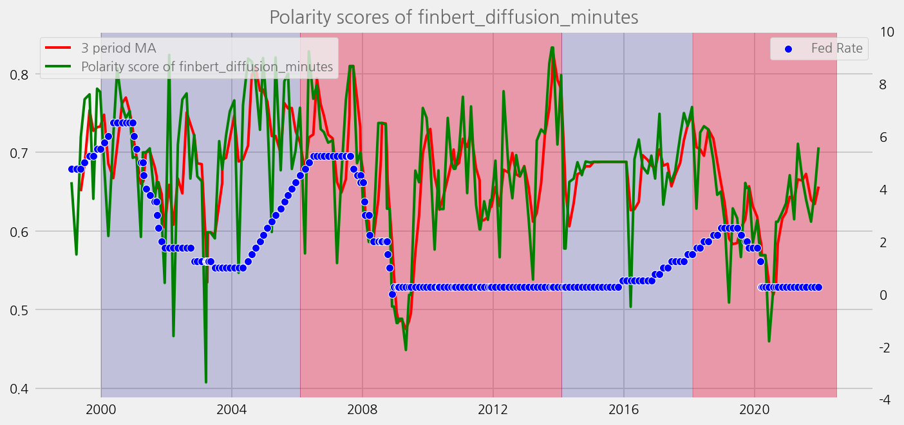
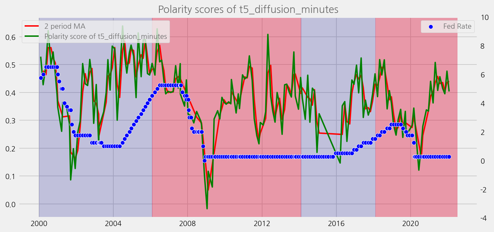
sentiments = ['lm_tones', 'finbert_tones', 't5_tones']
for name in sentiments:
plot_sentiments_over_chair_periods(name)
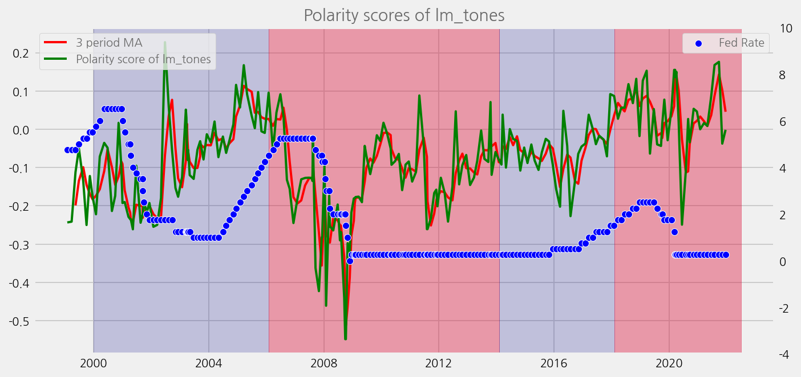
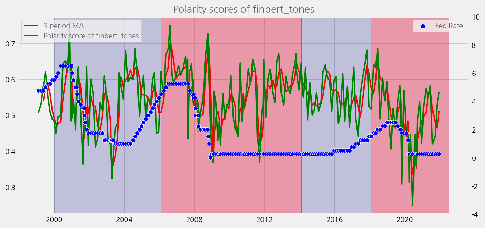
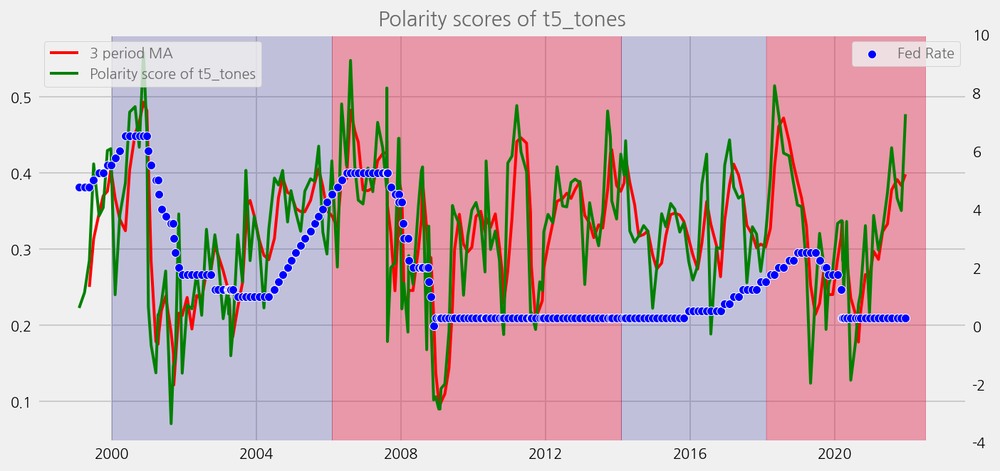
Build and load a feature set with tones#
econ_train_small = eKonf.load_data("econ_train_small.parquet", data_dir)
econ_train_small
| target | prev_decision | GDP_diff_prev | PMI | EMP_diff_prev | RSALES_diff_year | UNEMP_diff_prev | HSALES_diff_year | Inertia_diff | Balanced_diff | |
|---|---|---|---|---|---|---|---|---|---|---|
| date | ||||||||||
| 1982-10-05 | Cut | 0.0 | 0.456199 | 38.8 | -0.201426 | 2.094256 | 3.061224 | 42.307692 | 0.0 | 0.0 |
| 1982-11-16 | Cut | -1.0 | -0.382299 | 39.4 | -0.309476 | 2.094256 | 2.970297 | 34.831461 | 0.0 | 0.0 |
| 1982-12-21 | Hold | -1.0 | -0.382299 | 39.2 | -0.136097 | 2.094256 | 3.846154 | 45.026178 | 0.0 | 0.0 |
| 1983-01-14 | Hold | 0.0 | -0.382299 | 42.8 | -0.016895 | 2.094256 | 0.000000 | 14.004376 | 0.0 | 0.0 |
| 1983-01-21 | Hold | 0.0 | -0.382299 | 42.8 | -0.016895 | 2.094256 | 0.000000 | 14.004376 | 0.0 | 0.0 |
| ... | ... | ... | ... | ... | ... | ... | ... | ... | ... | ... |
| 2021-11-03 | Hold | 0.0 | 0.570948 | 60.5 | 0.288624 | 8.474656 | -9.615385 | -26.135217 | 0.0 | 0.0 |
| 2021-12-15 | Hold | 0.0 | 0.570948 | 60.6 | 0.437147 | 10.977142 | -8.695652 | -11.163337 | 0.0 | 0.0 |
| 2022-01-26 | Hold | 0.0 | 0.570948 | 58.8 | 0.395555 | 9.101289 | -7.142857 | -3.673938 | 0.0 | 0.0 |
| 2022-03-16 | Hike | 0.0 | 1.680778 | 58.6 | 0.476814 | 9.076698 | -5.000000 | 3.125000 | 0.0 | 0.0 |
| 2022-05-04 | Hike | 1.0 | -0.355417 | 57.1 | 0.283658 | -0.034915 | 0.000000 | -26.946848 | 0.0 | 0.0 |
415 rows × 10 columns
cols = [
'polarity_diffusion_minutes', 'polarity_diffusion_speech', 'polarity_diffusion_statement',
'finbert_diffusion_minutes', 'finbert_diffusion_speech', 'finbert_diffusion_statement',
't5_diffusion_minutes', 't5_diffusion_speech', 't5_diffusion_statement',
'lm_tones', 'finbert_tones', 't5_tones'
]
fomc_train_tones = econ_train_small.merge(merged_tone_data[cols], left_index=True, right_index=True)
fomc_train_tones.index.name = 'date'
eKonf.save_data(fomc_train_tones, "fomc_train_tones.parquet", data_dir)
fomc_train_tones
| target | prev_decision | GDP_diff_prev | PMI | EMP_diff_prev | RSALES_diff_year | UNEMP_diff_prev | HSALES_diff_year | Inertia_diff | Balanced_diff | ... | polarity_diffusion_statement | finbert_diffusion_minutes | finbert_diffusion_speech | finbert_diffusion_statement | t5_diffusion_minutes | t5_diffusion_speech | t5_diffusion_statement | lm_tones | finbert_tones | t5_tones | |
|---|---|---|---|---|---|---|---|---|---|---|---|---|---|---|---|---|---|---|---|---|---|
| date | |||||||||||||||||||||
| 1999-02-03 | Hold | 0.0 | 1.616191 | 46.8 | 0.286880 | 4.952373 | 0.000000 | 19.672131 | 0.0 | 0.0 | ... | -0.363636 | 0.662069 | 0.222222 | 0.636364 | 0.420690 | 0.111111 | 0.136364 | -0.243343 | 0.506885 | 0.222721 |
| 1999-03-30 | Hold | 0.0 | 1.616191 | 51.7 | 0.327325 | 5.932944 | 2.325581 | -2.078522 | 0.0 | 0.0 | ... | -0.363636 | 0.570048 | 0.381295 | 0.636364 | 0.405797 | 0.187050 | 0.136364 | -0.241290 | 0.529236 | 0.243070 |
| 1999-05-18 | Hold | 0.0 | 0.943827 | 52.3 | 0.288551 | 4.601659 | 2.380952 | 6.004619 | 0.0 | 0.0 | ... | -0.363636 | 0.719424 | 0.383234 | 0.636364 | 0.474820 | 0.245509 | 0.136364 | -0.112051 | 0.579674 | 0.285564 |
| 1999-06-30 | Hike | 0.0 | 0.943827 | 54.3 | 0.164078 | 5.248177 | -2.325581 | 0.112740 | 0.0 | 0.0 | ... | 0.000000 | 0.767606 | 0.097561 | 1.000000 | 0.514085 | 0.097561 | 0.625000 | -0.050040 | 0.621722 | 0.412215 |
| 1999-08-24 | Hike | 1.0 | 0.835000 | 53.6 | 0.251764 | 6.166822 | 0.000000 | 2.739726 | 0.0 | 0.0 | ... | -0.346154 | 0.773810 | 0.178947 | 0.692308 | 0.583333 | 0.178947 | 0.269231 | -0.135226 | 0.548355 | 0.343837 |
| ... | ... | ... | ... | ... | ... | ... | ... | ... | ... | ... | ... | ... | ... | ... | ... | ... | ... | ... | ... | ... | ... |
| 2021-06-16 | Hold | 0.0 | 1.533890 | 61.6 | 0.308928 | 22.314413 | -3.333333 | 4.815864 | 0.0 | 0.0 | ... | 0.307692 | 0.666667 | 0.464567 | 0.615385 | 0.407407 | 0.330709 | 0.384615 | 0.086359 | 0.582206 | 0.374244 |
| 2021-07-28 | Hold | 0.0 | 1.533890 | 60.9 | 0.383765 | 13.352829 | 1.724138 | -22.559653 | 0.0 | 0.0 | ... | 0.384615 | 0.640138 | 0.157895 | 0.461538 | 0.456747 | 0.228070 | 0.615385 | 0.167826 | 0.419857 | 0.433401 |
| 2021-09-22 | Hold | 0.0 | 1.640747 | 59.7 | 0.353173 | 9.952513 | -3.703704 | -33.783784 | 0.0 | 0.0 | ... | 0.461538 | 0.611842 | 0.172840 | 0.538462 | 0.414474 | 0.148148 | 0.538462 | 0.176087 | 0.441048 | 0.367028 |
| 2021-11-03 | Hold | 0.0 | 0.570948 | 60.5 | 0.288624 | 8.474656 | -9.615385 | -26.135217 | 0.0 | 0.0 | ... | 0.428571 | 0.651163 | 0.371429 | 0.571429 | 0.395349 | 0.085714 | 0.571429 | -0.037468 | 0.531340 | 0.350831 |
| 2021-12-15 | Hold | 0.0 | 0.570948 | 60.6 | 0.437147 | 10.977142 | -8.695652 | -11.163337 | 0.0 | 0.0 | ... | 0.176471 | 0.706383 | 0.338889 | 0.647059 | 0.476596 | 0.250000 | 0.705882 | -0.001460 | 0.564110 | 0.477493 |
219 rows × 22 columns
econ_cols = [
"prev_decision",
"GDP_diff_prev",
"PMI",
"EMP_diff_prev",
"RSALES_diff_year",
"UNEMP_diff_prev",
"HSALES_diff_year",
"Inertia_diff",
"Balanced_diff",
]
data_cols = econ_cols + cols
cfg = eKonf.compose("dataset=feature_build")
cfg.name = "fomc_tone_features"
cfg.data_dir = data_dir
cfg.data_file = "fomc_train_tones.parquet"
cfg.force.build = True
cfg.pipeline.split_sampling.stratify_on = "target"
cfg.pipeline.split_sampling.random_state = 5678
cfg.pipeline.split_sampling.test_size = 0.3
cfg.pipeline.reset_index.index_column_name = "date"
cfg.column_info.columns.index = "index"
cfg.column_info.columns.id = "date"
cfg.column_info.columns.x = data_cols
cfg.column_info.columns.y = "target"
f_tones = eKonf.instantiate(cfg)
f_tones.persist()
INFO:ekorpkit.base:Applying pipe: functools.partial(<function load_dataframe at 0x7f4a924ba1f0>)
INFO:ekorpkit.base:Applying pipe: functools.partial(<function reset_index at 0x7f4a921d7ca0>)
INFO:ekorpkit.base:Applying pipe: functools.partial(<function split_sampling at 0x7f4a921e43a0>)
WARNING:ekorpkit.datasets.base:File fomc_tone_features-dev.parquet not found.
cfg = eKonf.compose(config_group="dataset=feature")
cfg.name = "fomc_tone_features"
cfg.data_dir = data_dir
f_tones = eKonf.instantiate(cfg)
print(f_tones)
FeatureSet : fomc_tone_features
f_tones.COLUMN.X
['prev_decision',
'GDP_diff_prev',
'PMI',
'EMP_diff_prev',
'RSALES_diff_year',
'UNEMP_diff_prev',
'HSALES_diff_year',
'Inertia_diff',
'Balanced_diff',
'polarity_diffusion_minutes',
'polarity_diffusion_speech',
'polarity_diffusion_statement',
'finbert_diffusion_minutes',
'finbert_diffusion_speech',
'finbert_diffusion_statement',
't5_diffusion_minutes',
't5_diffusion_speech',
't5_diffusion_statement',
'lm_tones',
'finbert_tones',
't5_tones']
Visualize Features#
f_tones.y_train = f_tones.transform_labels(f_tones.y_train)
f_tones.y_dev = f_tones.transform_labels(f_tones.y_dev)
f_tones.y_test = f_tones.transform_labels(f_tones.y_test)
X_cols = f_tones.COLUMN.X
y_col = f_tones.COLUMN.Y
print(f_tones.classes, X_cols, y_col)
['Cut', 'Hike', 'Hold'] ['prev_decision', 'GDP_diff_prev', 'PMI', 'EMP_diff_prev', 'RSALES_diff_year', 'UNEMP_diff_prev', 'HSALES_diff_year', 'Inertia_diff', 'Balanced_diff', 'polarity_diffusion_minutes', 'polarity_diffusion_speech', 'polarity_diffusion_statement', 'finbert_diffusion_minutes', 'finbert_diffusion_speech', 'finbert_diffusion_statement', 't5_diffusion_minutes', 't5_diffusion_speech', 't5_diffusion_statement', 'lm_tones', 'finbert_tones', 't5_tones'] target
f_tones.train_data.head()
| date | target | prev_decision | GDP_diff_prev | PMI | EMP_diff_prev | RSALES_diff_year | UNEMP_diff_prev | HSALES_diff_year | Inertia_diff | ... | finbert_diffusion_minutes | finbert_diffusion_speech | finbert_diffusion_statement | t5_diffusion_minutes | t5_diffusion_speech | t5_diffusion_statement | lm_tones | finbert_tones | t5_tones | split | |
|---|---|---|---|---|---|---|---|---|---|---|---|---|---|---|---|---|---|---|---|---|---|
| index | |||||||||||||||||||||
| 0 | 2010-04-28 | 2 | 0.0 | 1.067962 | 58.8 | 0.139555 | 5.061896 | 1.020408 | 12.389381 | 0.0 | ... | 0.677083 | 0.117647 | 0.583333 | 0.359375 | 0.117647 | 0.333333 | -0.050143 | 0.459355 | 0.270118 | train |
| 1 | 2008-10-29 | 0 | -1.0 | 0.572295 | 44.8 | -0.335245 | -6.288802 | 0.000000 | -36.880466 | 0.0 | ... | 0.628378 | 0.388889 | 0.791667 | 0.283784 | 0.126984 | 0.208333 | -0.297673 | 0.602978 | 0.206367 | train |
| 2 | 2018-12-19 | 1 | 0.0 | 0.481953 | 58.8 | 0.068241 | 1.349789 | 0.000000 | -15.611814 | 0.0 | ... | 0.650206 | 0.689394 | 0.444444 | 0.362140 | 0.378788 | 0.333333 | -0.017770 | 0.594681 | 0.358087 | train |
| 3 | 2009-08-12 | 2 | 0.0 | -0.169238 | 49.9 | -0.259526 | -7.390883 | 0.000000 | -13.836478 | 0.0 | ... | 0.676806 | 0.458333 | 0.545455 | 0.334601 | 0.208333 | 0.454545 | -0.117091 | 0.560198 | 0.332493 | train |
| 4 | 2000-11-15 | 2 | 0.0 | 0.099774 | 48.7 | -0.001511 | 2.243324 | 0.000000 | 6.995413 | 0.0 | ... | 0.752381 | 0.642276 | 0.842105 | 0.466667 | 0.471545 | 0.736842 | 0.016816 | 0.745588 | 0.558351 | train |
5 rows × 24 columns
cfg = eKonf.compose(config_group="visualize/plot=rank1d")
cfg.plots[0].x = X_cols
cfg.plots[0].y = y_col
cfg.plots[0].classes = f_tones.classes
eKonf.instantiate(cfg, data=f_tones.data)
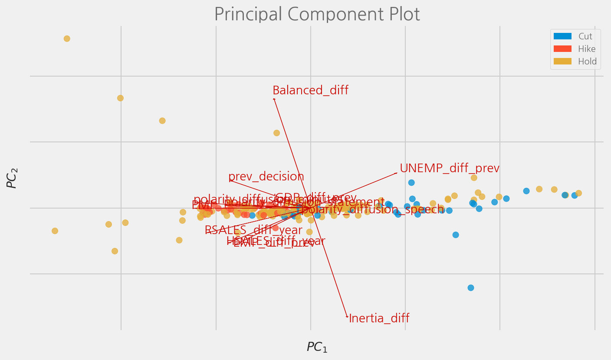
cfg = eKonf.compose(config_group="visualize/plot=rank2d")
cfg.plots[0].x = X_cols
cfg.plots[0].y = y_col
cfg.figure.figsize = (10, 8)
eKonf.instantiate(cfg, data=f_tones.data)
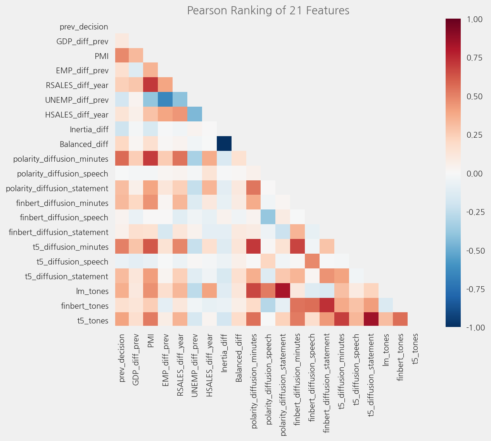
Monetary Policy Shocks#
Christiano, Lawrence J., Martin Eichenbaum, and Charles L. Evans. 1999. “Monetary Policy Shocks: What Have We Learned and to What End?”
import numpy as np
ids = {
"GDPC1": "Real GDP",
"PCECC96": "Real Consumption",
"GDPDEF": "GDP Deflator",
"GPDIC1": "Real investment",
"COMPRNFB": "Real wage",
"OPHNFB": "Labor productivity",
"FEDFUNDS": "Federal funds rate",
"CP": "Real profit",
"M2SL": "M2 Growth",
"SP500": "SP500",
"CPIAUCSL": "CPI",
}
cols = list(ids.keys())
cfg = eKonf.compose("io/fetcher=quandl")
cfg.series_name = "value"
cfg.series_id = cols
# cfg.force_download = True
quandl = eKonf.instantiate(cfg)
econ_data = quandl.data.reset_index()
cfg = eKonf.compose("pipeline/pivot")
cfg.index = "date"
cfg.columns = "series_id"
cfg.values = ["value"]
econ_data_pivot = eKonf.pipe(econ_data, cfg)
econ_data_pivot = econ_data_pivot.set_index("date").resample("Q").last()
cols.remove("M2SL")
econ_data_pivot[cols] = np.log(econ_data_pivot[cols])
econ_data_pivot["M2SL"] = econ_data_pivot.M2SL.pct_change()
econ_data_pivot
INFO:ekorpkit.base:Applying pipe: functools.partial(<function pivot at 0x7f4a921e4af0>)
| series_id | COMPRNFB | CP | CPIAUCSL | FEDFUNDS | GDPC1 | GDPDEF | GPDIC1 | M2SL | OPHNFB | PCECC96 | SP500 |
|---|---|---|---|---|---|---|---|---|---|---|---|
| date | |||||||||||
| 1946-03-31 | NaN | NaN | NaN | NaN | NaN | NaN | NaN | NaN | NaN | NaN | NaN |
| 1946-06-30 | NaN | NaN | NaN | NaN | NaN | NaN | NaN | NaN | NaN | NaN | NaN |
| 1946-09-30 | NaN | NaN | NaN | NaN | NaN | NaN | NaN | NaN | NaN | NaN | NaN |
| 1946-12-31 | NaN | NaN | NaN | NaN | NaN | NaN | NaN | NaN | NaN | NaN | NaN |
| 1947-03-31 | 3.578618 | 3.089678 | 3.091042 | NaN | 7.617981 | 2.480899 | 5.384912 | NaN | 3.144712 | 7.152613 | NaN |
| ... | ... | ... | ... | ... | ... | ... | ... | ... | ... | ... | ... |
| 2021-06-30 | 4.746253 | 7.897441 | 5.601953 | -2.525729 | 9.871394 | 4.765698 | 8.162235 | 0.030493 | 4.723513 | 9.522638 | 8.365789 |
| 2021-09-30 | 4.745236 | 7.908976 | 5.613909 | -2.525729 | 9.877087 | 4.780089 | 8.191378 | 0.026018 | 4.713495 | 9.527514 | 8.368122 |
| 2021-12-31 | 4.751225 | 7.901128 | 5.635240 | -2.525729 | 9.893755 | 4.797343 | 8.269513 | 0.023429 | 4.728865 | 9.533753 | 8.469300 |
| 2022-03-31 | 4.739937 | 7.910851 | 5.661946 | -1.609438 | 9.889790 | 4.817172 | 8.281742 | 0.015165 | 4.709791 | 9.538284 | 8.418568 |
| 2022-06-30 | NaN | NaN | 5.674951 | -0.261365 | NaN | NaN | NaN | -0.002513 | NaN | NaN | 8.238902 |
306 rows × 11 columns
def plot_irfs(
from_year=1990,
to_year=2021,
shock_name="Federal funds rate",
tone_col=None,
econ_cols=[
"COMPRNFB",
"CP",
"FEDFUNDS",
"GDPC1",
"GDPDEF",
"GPDIC1",
"M2SL",
"OPHNFB",
"PCECC96",
],
):
_data = econ_data_pivot[(econ_data_pivot.index.year >= from_year) & (econ_data_pivot.index.year <= to_year)].copy()
_data = _data[econ_cols]
_names = {col: ids[col] for col in econ_cols}
_data.rename(columns=_names, inplace=True)
if tone_col in fomc_train_tones.columns:
f_tone_data = fomc_train_tones[[tone_col]].dropna()
tones_q = f_tone_data.resample("Q").mean()
_data = _data.merge(
tones_q[[tone_col]].ffill(), left_index=True, right_index=True
)
irfs = fomc.get_irf(_data)
if shock_name:
fomc.plot_irf(irfs, shock_name)
if tone_col in _data.columns:
fomc.plot_irf(irfs, tone_col)
Plot impulse response functions#
plot_irfs(from_year=1965, to_year=1995)
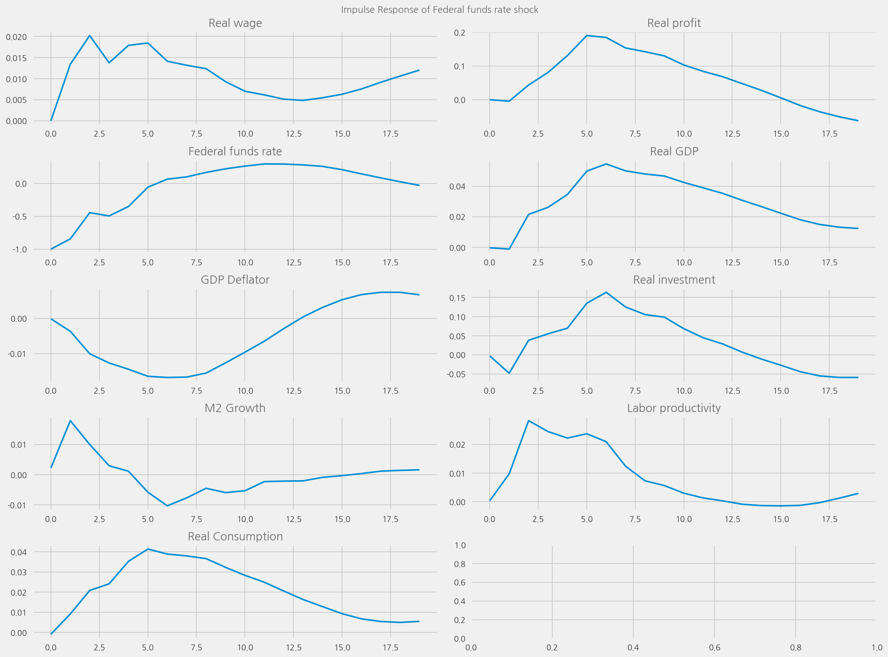
plot_irfs(tone_col="t5_diffusion_minutes")
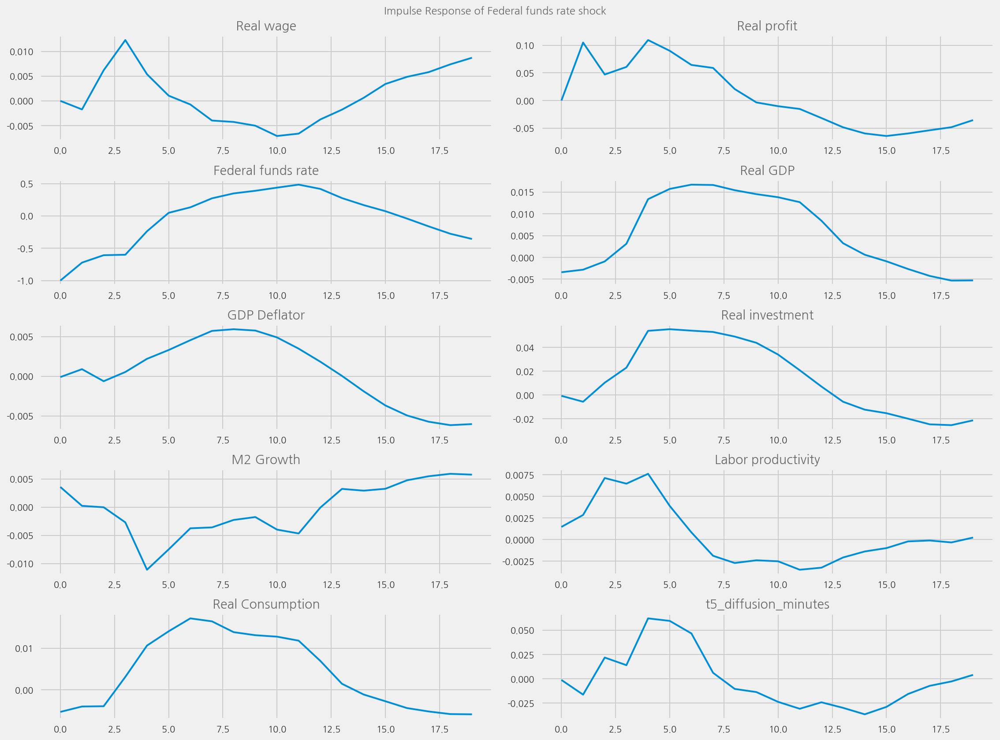
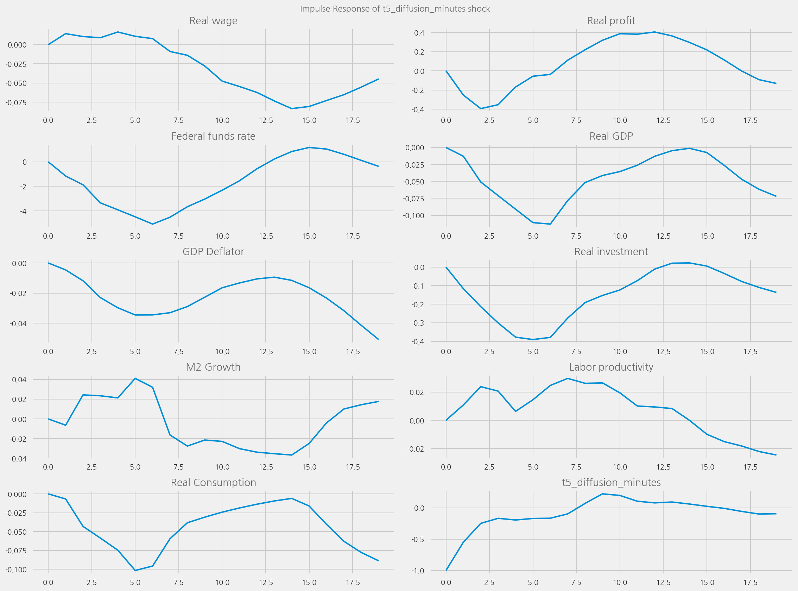
plot_irfs(tone_col="polarity_diffusion_minutes", shock_name=None)
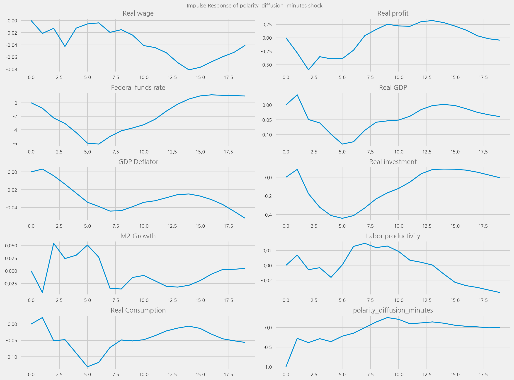
plot_irfs(tone_col="finbert_diffusion_minutes", shock_name=None)
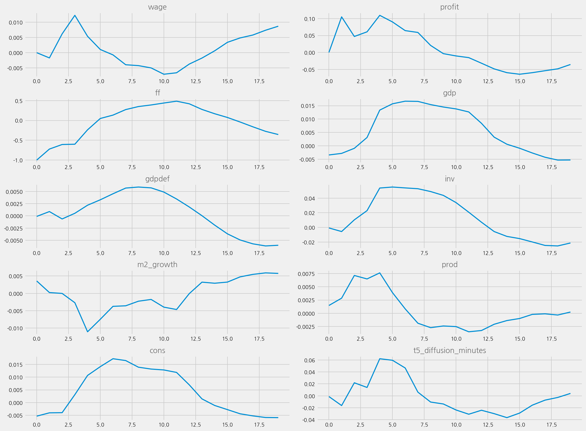